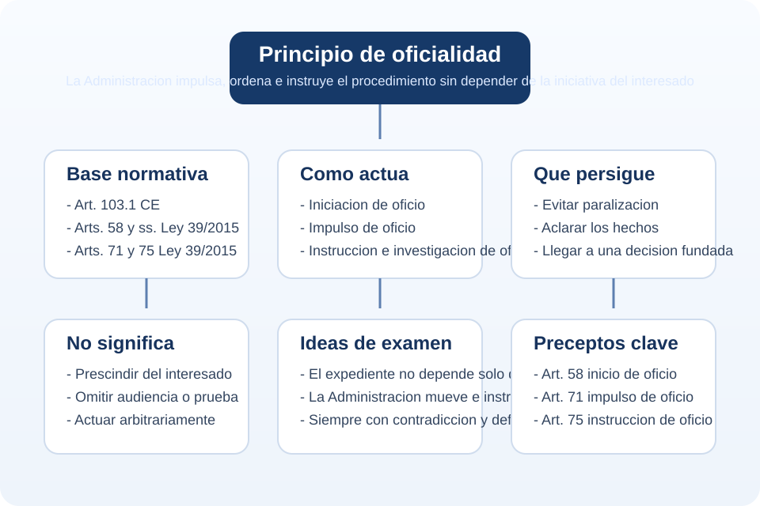

Que implica
Direccion activa del expediente por la Administracion.
Tema 1 - Punto 4.2 - Resumen
El principio de oficialidad supone que la Administracion dirige activamente el procedimiento: puede iniciarlo de oficio cuando proceda, lo impulsa en todos sus tramites y realiza las actuaciones de instruccion necesarias para resolver.
Frase para memorizar: oficialidad es que el expediente lo mueve la Administracion, no solo el interesado.

La oficialidad significa que el procedimiento administrativo tiene una direccion publica. La Administracion no se limita a esperar la actuacion de las partes, sino que asume el deber de iniciar, impulsar e instruir el expediente para llegar a una resolucion conforme a Derecho.
| Manifestacion | Contenido |
|---|---|
| Iniciacion de oficio | La Administracion puede abrir el procedimiento por propia iniciativa, orden superior, peticion razonada o denuncia. |
| Impulso de oficio | La Administracion hace avanzar el expediente en todos sus tramites. |
| Instruccion de oficio | El organo tramitador practica actuaciones para conocer y comprobar los hechos relevantes. |
Direccion activa del expediente por la Administracion.
Evitar paralizacion y asegurar una base suficiente para resolver.
Alegaciones, prueba, audiencia, contradiccion y recursos del interesado.
Principio de direccion publica del procedimiento dentro de la legalidad.
La oficialidad no permite actuar sin competencia ni sin respetar las garantias procedimentales. La Administracion puede dirigir el expediente, pero debe hacerlo con legalidad, objetividad y respeto al derecho de defensa.
Oficialidad no equivale a autoritarismo procedimental. Equivale a iniciativa y responsabilidad administrativa con garantias.
Definicion corta: el principio de oficialidad obliga a la Administracion a asumir la iniciativa y direccion del procedimiento, pudiendo iniciarlo de oficio, impulsandolo en todos sus tramites e instruyendolo para conocer los hechos y resolver.